Cada parte tiene tres cosas: qué mostrar (la lámina o la tecla que pulsas), la imagen de cómo se ve, y lo que dices en el recuadro amarillo, para leerlo o decirlo con tus palabras. Los recuadros verdes son datos de apoyo por si te preguntan. Los rojos son cosas a tener en cuenta en vivo.
Exposicion\Avance_S8_S11_MPI.pptx en la Vista del moderador (Alt + F5): en las notas tienes un resumen de este guion.matmul-paralelo\VISUAL.bat con doble clic, maximiza la ventana y déjala en la bienvenida, sin pulsar nada.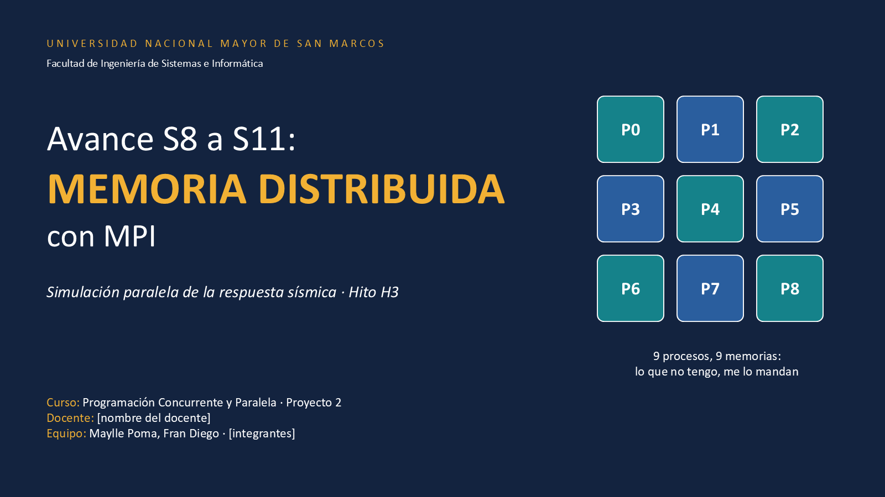
"Buenos días. Hoy presentamos el avance de las semanas 8 a 11 de nuestro proyecto, la simulación paralela de la respuesta sísmica de un edificio.
En la exposición pasada mostramos OpenMP: varios hilos dentro de un mismo computador, que comparten la misma memoria. Hoy damos el siguiente paso: MPI, memoria distribuida. Aquí cada proceso tiene su propia memoria, como si cada uno fuera un computador distinto. Estos nueve cuadros son nueve procesos y cada uno solo ve lo suyo: si necesita un dato de otro, se lo tienen que mandar con un mensaje. Así es como funcionan los clústeres y las supercomputadoras."
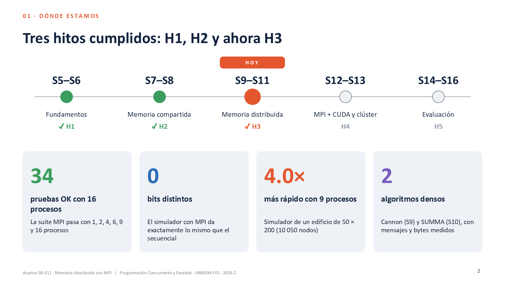
"Nuestro cronograma tiene cinco hitos. El H1 fue el simulador secuencial validado y el H2 la versión con OpenMP y su demo. Hoy cerramos la fase de memoria distribuida, semanas 9 a 11, con el Hito H3, que dice: la simulación con MPI tiene que dar los mismos desplazamientos que la secuencial con 1, 4, 9 y 16 procesos. Por ahora todo corre en una sola laptop; en las semanas 12 y 13, además del híbrido con la tarjeta gráfica, lo vamos a llevar a un clúster de varias computadoras. Por eso esa etapa dice "MPI + CUDA y clúster".
Les adelanto los resultados. Primero, 34 pruebas OK con 16 procesos. Segundo, cero bits distintos: el resultado con MPI es exactamente igual al secuencial, no parecido. Tercero, con 9 procesos el simulador va 4 veces más rápido. Y cuarto, implementamos dos algoritmos para el producto de matrices denso, Cannon y SUMMA, y medimos cuántos mensajes y cuántos bytes usa cada uno."
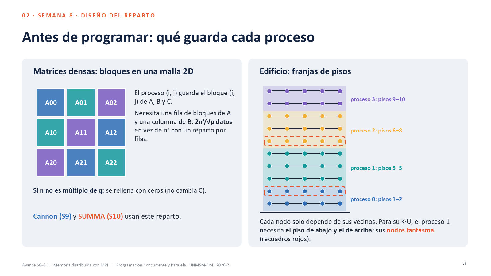
"La tarea de la semana 8 era diseñar cómo repartir el trabajo. En memoria distribuida eso es lo primero que hay que decidir: qué datos guarda cada proceso, porque lo que no tiene, alguien se lo tiene que mandar.
Para las matrices densas usamos una malla de procesos en dos dimensiones. El proceso de la fila i y la columna j guarda el bloque (i, j) de las matrices A, B y C. Para calcular su bloque de C solo necesita una fila de bloques de A y una columna de bloques de B. Si repartiéramos por filas, cada proceso necesitaría la matriz B entera; así, con 16 procesos, cada uno recibe cuatro veces menos datos.
Para el edificio es distinto. La matriz K es dispersa: cada nodo solo está conectado con sus vecinos. Entonces a cada proceso le damos una franja de pisos; en el dibujo, cada color es un proceso. Para calcular su parte, el proceso 1, el verde, necesita solo dos cosas de los demás: el piso de abajo y el de arriba, los de los recuadros rojos. Esos los llamamos nodos fantasma: copias de nodos de otro proceso que se actualizan en cada paso de tiempo."
docs/DISENO_REPARTO_MPI.md.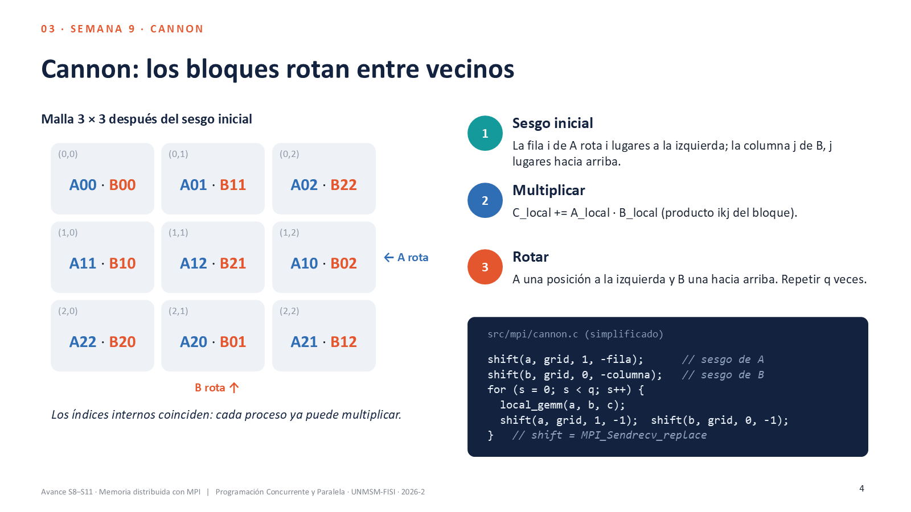
"El primer algoritmo es el de Cannon. Usa una malla cuadrada de procesos, por ejemplo de 3 por 3, en la que cada fila y cada columna se cierran en anillo.
Lo primero es un sesgo inicial: la fila i de A se corre i lugares a la izquierda y la columna j de B, j lugares hacia arriba. Después de eso pasa algo bonito: miren esta casilla, la (1,2). Tiene el bloque A10 y el bloque B02, y el índice del medio, el cero, coincide. Eso pasa en todas las casillas, así que cada proceso ya puede multiplicar sus dos bloques.
Luego se repite q veces: multiplicar, rotar A una posición a la izquierda y B una hacia arriba. En el código, cada rotación es un MPI_Sendrecv_replace: manda su bloque al vecino y recibe el del otro vecino en la misma llamada y en el mismo espacio de memoria. Así todos rotan a la vez, sin quedarse bloqueados esperándose unos a otros."
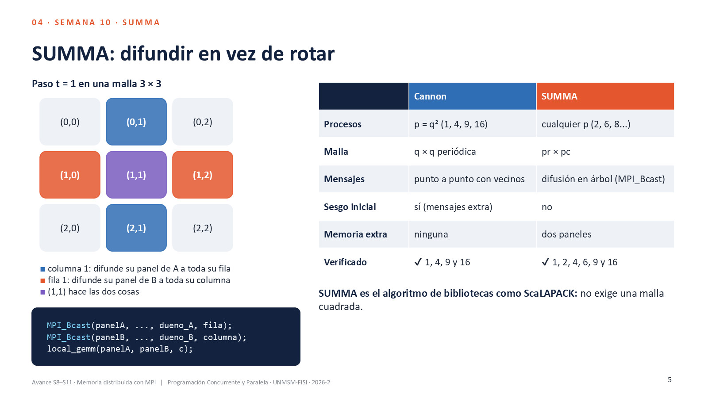
"El segundo algoritmo es SUMMA. Calcula lo mismo, pero con otra idea: los bloques no se mueven de dueño. En cada paso, alguien difunde un pedazo a los demás. En este paso, la columna 1, en azul, manda su pedazo de A a toda su fila, y la fila 1, en naranja, manda su pedazo de B a toda su columna. El de en medio, en morado, hace las dos cosas. Para eso usamos MPI_Bcast, que MPI hace en forma de árbol, no mandando uno por uno.
La tabla resume las diferencias. La más importante es la primera fila: Cannon solo funciona con 1, 4, 9 o 16 procesos, y SUMMA funciona con cualquier número, por ejemplo 2, 6 u 8. Además no necesita sesgo inicial. Por eso SUMMA es el algoritmo que usan bibliotecas profesionales como ScaLAPACK."
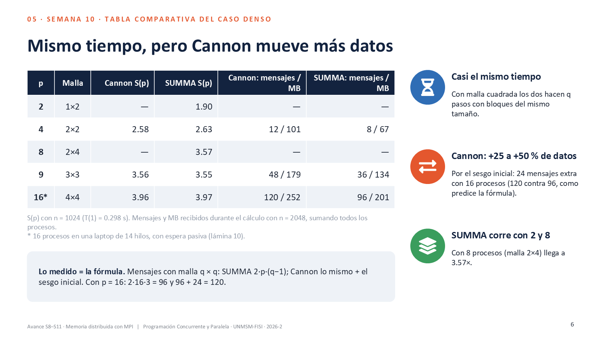
"El entregable de la semana 10 es esta tabla: Cannon contra SUMMA, multiplicando matrices de 1024 por 1024.
En velocidad están prácticamente empatados: con 9 procesos, Cannon es 3,56 veces más rápido que el secuencial y SUMMA 3,55. Tiene sentido, porque con una malla cuadrada los dos hacen la misma cantidad de pasos con bloques del mismo tamaño.
La diferencia está en la comunicación. Cannon recibe más datos: con 16 procesos son 120 mensajes contra 96. Y no lo medimos a ciegas, coincide con la fórmula: los dos necesitan 2 por p por (q menos 1), que con 16 procesos da 96, y Cannon suma 24 más del sesgo inicial. Además, SUMMA corre con 2 y con 8 procesos, donde Cannon no puede, y con 8 llega a 3,57 veces."
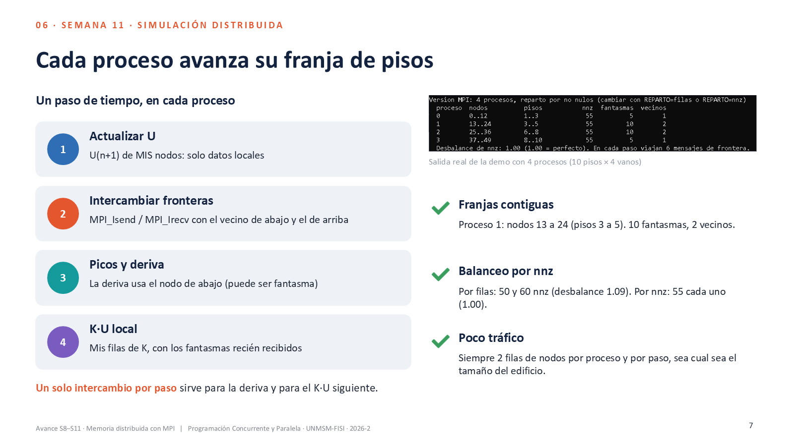
"Ahora el corazón del hito: el simulador con el edificio repartido. Cada proceso tiene su franja de pisos y, en cada paso de tiempo, hace cuatro cosas.
Uno: actualiza el desplazamiento de sus propios nodos; para eso solo necesita datos que ya tiene. Dos: intercambia las fronteras con el vecino de abajo y el de arriba. Usamos MPI_Isend y MPI_Irecv, que no bloquean: lanzo los mensajes a los dos vecinos a la vez y espero todo junto al final. Tres: calcula los picos y la deriva; la deriva compara cada piso con el de abajo, que puede ser un fantasma. Y cuatro: calcula su parte del producto K por U con los fantasmas que acaba de recibir. Con un solo intercambio por paso nos alcanza para las dos cosas.
Esta es la salida real de la demo con 4 procesos. El proceso 1 tiene los nodos del 13 al 24, que son parte del piso 3, el 4 y parte del 5. Necesita 10 fantasmas, 5 de abajo y 5 de arriba, y tiene 2 vecinos. Y fíjense en la columna nnz: cada proceso tiene exactamente 55 no nulos. Eso es el balanceo de carga: no repartimos por cantidad de nodos sino por cantidad de no nulos, que es lo que realmente cuesta calcular. Si repartiéramos por nodos, un proceso tendría 50 y otro 60."
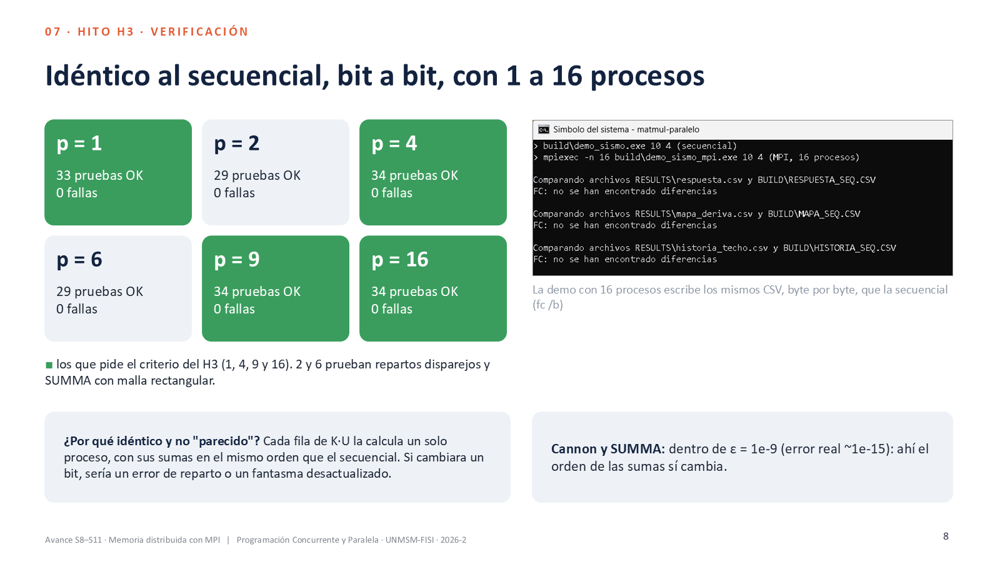
"El criterio del H3 dice que la simulación con MPI debe dar los mismos desplazamientos que la secuencial con 1, 4, 9 y 16 procesos. Esas son las tarjetas verdes: todas las pruebas pasan, cero fallas. También probamos con 2 y con 6 procesos, que reparten el trabajo de forma dispareja y obligan a SUMMA a usar una malla rectangular.
Y lo cumplimos con el criterio más estricto posible: idéntico bit a bit. A la derecha corrimos la demo secuencial y la de 16 procesos y comparamos los archivos de resultados con el comando fc: no se han encontrado diferencias. Ni un solo byte distinto.
¿Por qué podemos exigir que sea idéntico? Porque cada fila del producto la calcula un solo proceso y suma en el mismo orden que el secuencial. Si cambiara un solo bit, sería un error nuestro, por ejemplo un fantasma desactualizado, y la prueba lo detectaría."
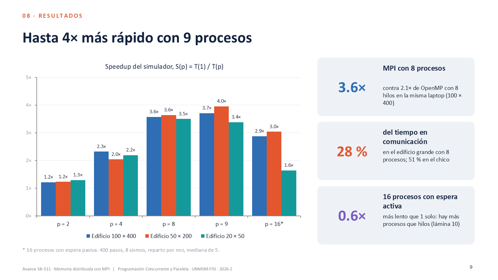
"Este es el speedup del simulador con tres tamaños de edificio, desde mil nodos hasta cuarenta mil. Con 8 y 9 procesos llegamos a entre 3,5 y 4 veces más rápido; el máximo es 3,96 con 9 procesos en el edificio de 50 por 200.
Un dato que nos sorprendió: en esta misma laptop, OpenMP con 8 hilos daba 2,1 veces, y MPI con 8 procesos da 3,6. La razón es que en OpenMP todos los hilos se esperan en una barrera dos veces por cada paso de tiempo; en MPI cada proceso solo espera a sus dos vecinos.
También se ve que la comunicación pesa menos cuanto más grande es el edificio: en el grande es el 28 % del tiempo y en el chico el 51 %. Siempre se mandan solo dos filas de nodos, pero el cálculo crece con el tamaño del edificio. Y la última tarjeta: con 16 procesos, sin cuidado, va más lento que con uno solo. Eso lo explico en la siguiente."
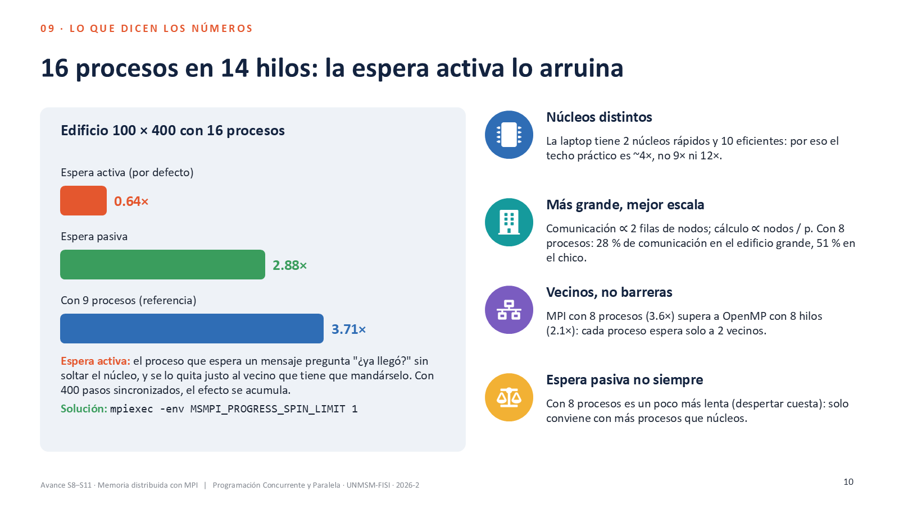
"Esto fue lo más interesante de medir. La laptop tiene 14 hilos y le pedimos 16 procesos. Con la configuración por defecto, el simulador fue 0,64 veces: más lento que con un solo proceso.
¿Por qué? MS-MPI, para responder rápido, espera los mensajes con espera activa: un bucle que pregunta "¿ya llegó?, ¿ya llegó?" sin soltar el núcleo. Si hay más procesos que núcleos, el que está esperando le quita la CPU justo al vecino que le tiene que mandar el dato. Y como el simulador se sincroniza 400 veces, el efecto se acumula.
La solución es una opción de mpiexec que activa la espera pasiva: el que espera suelta el núcleo. Con el mismo código, pasamos de 0,64 a 2,88 veces. Pero no la dejamos siempre, porque con 8 procesos es un poco más lenta: solo conviene cuando hay más procesos que núcleos.
La conclusión es que la programación paralela sí acelera, pero hay que conocer la máquina: cuántos núcleos tiene, que no todos son iguales y que conviene en problemas grandes."
VISUAL.bat (Alt + Tab), que ya está abierta en la bienvenida y maximizada. La demo no tiene lámina: se hace en vivo."Ahora lo vamos a ver funcionando en nuestro programa visual, el mismo de la exposición pasada. La novedad es que ahora tiene un cuarto motor: MPI.
Una aclaración antes de empezar: todo esto corre en una sola laptop. Los procesos MPI están en la misma máquina, cada uno con su propia memoria, pero todavía no en un clúster de varias computadoras. El código es el mismo que funcionaría en un clúster; correrlo en varias máquinas lo vamos a implementar en las semanas 12 y 13."
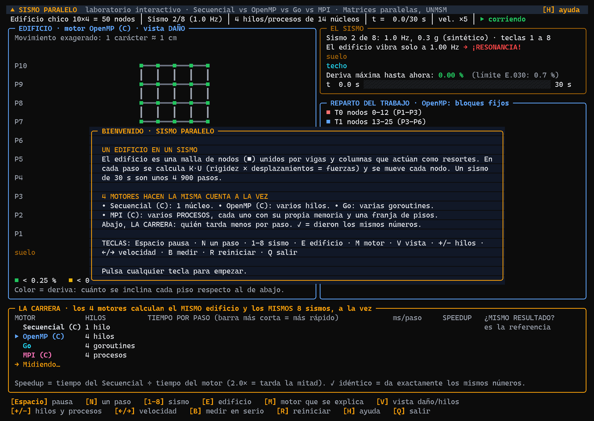
"Son cuatro motores que calculan exactamente lo mismo a la vez: el secuencial, OpenMP y Go, que ya conocen, y ahora MPI: varios procesos, cada uno con su propia memoria y una franja de pisos del edificio. El programa lanza los procesos MPI por detrás con mpiexec y les pide el resultado en cada paso para dibujarlo."
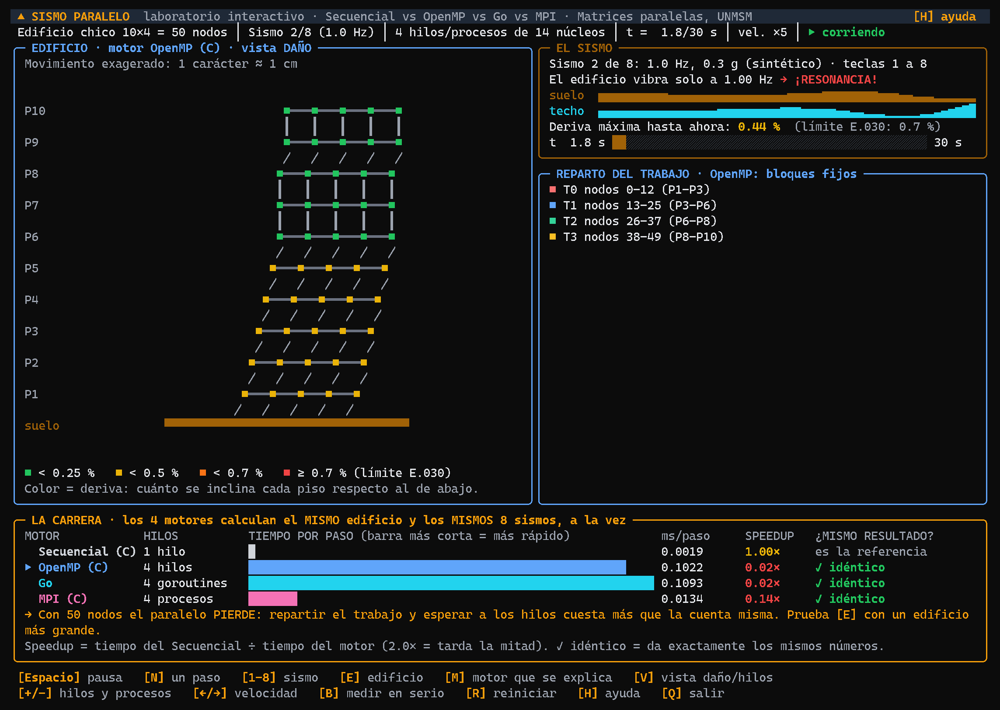
"Este es el edificio chico, 50 nodos, con el sismo de 1 hertz: arriba a la derecha dice resonancia, porque el edificio vibra justo a esa frecuencia.
Abajo está la carrera con los cuatro motores. Fíjense en la última columna: OpenMP, Go y MPI dicen idéntico. Dan exactamente los mismos números que el secuencial.
Pero con 50 nodos el paralelo pierde, y MPI también: repartir el trabajo y mandar mensajes cuesta más que la cuenta misma. Por eso hay que verlo con un edificio grande."
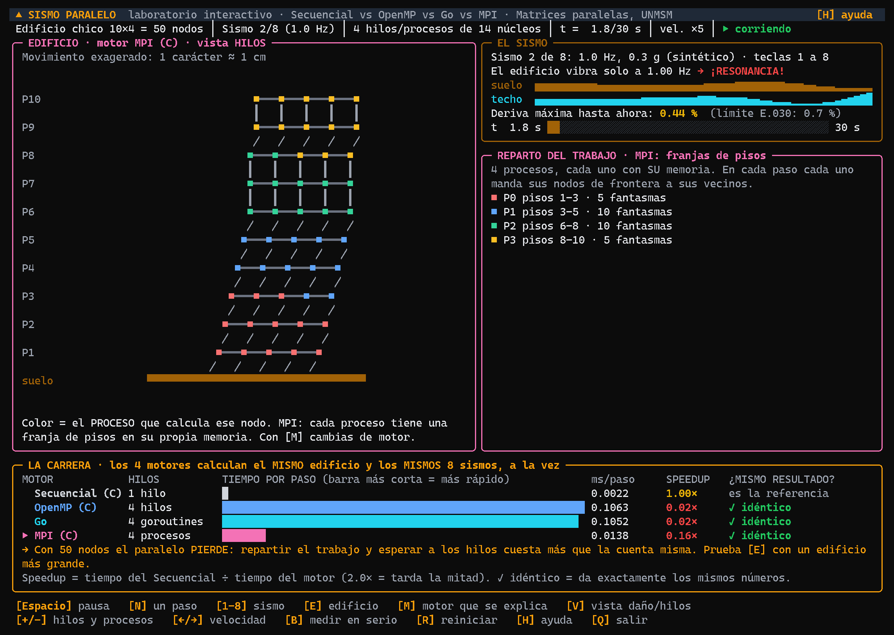
"Ahora el edificio está pintado por proceso: cada color es un proceso MPI, y cada uno tiene una franja de pisos en su propia memoria. A la derecha está el reparto: el proceso 0 tiene los primeros pisos, el 1 los siguientes, y así.
Y aquí está la idea clave de MPI: cada proceso necesita el piso de arriba y el de abajo de su franja, que son de otro proceso. Esos son los nodos fantasma, y en cada paso de tiempo los vecinos se los mandan con un mensaje."
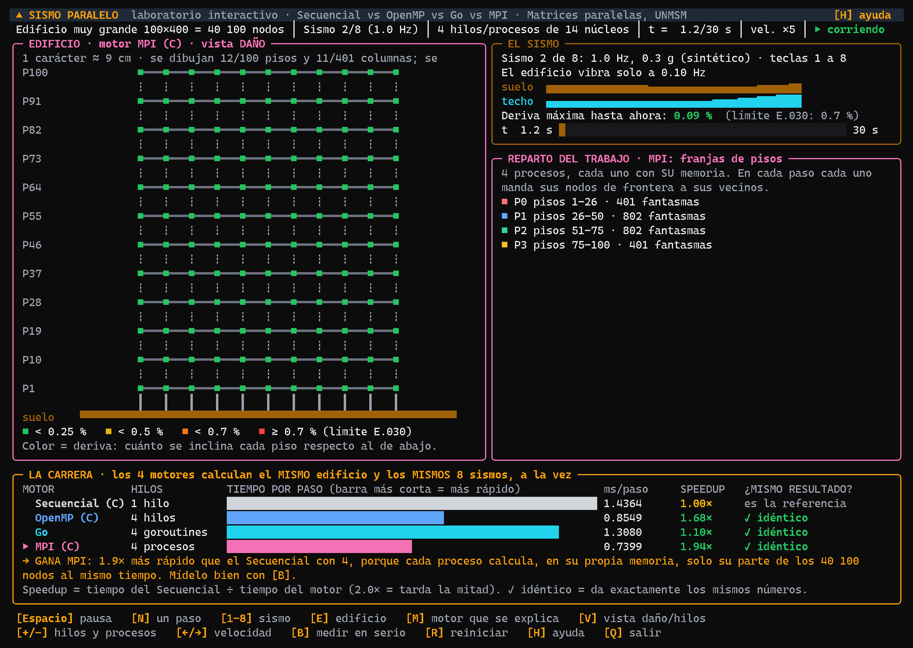
"Ahora el edificio de 40 mil nodos. La carrera se da vuelta: con 4 procesos, MPI es casi 2 veces más rápido que el secuencial, y es el más rápido de los cuatro. Y sigue diciendo idéntico.
A la derecha se ve el reparto: 4 procesos de unos 25 pisos cada uno. Los de los extremos tienen 401 fantasmas, una fila de nodos, y los del medio 802, porque tienen vecino arriba y abajo."
"Con 8 procesos, el edificio queda en 8 franjas, una por color. MPI llega a unas 2,4 veces más rápido, y sigue siendo el más rápido de los cuatro motores. Todos siguen diciendo idéntico."
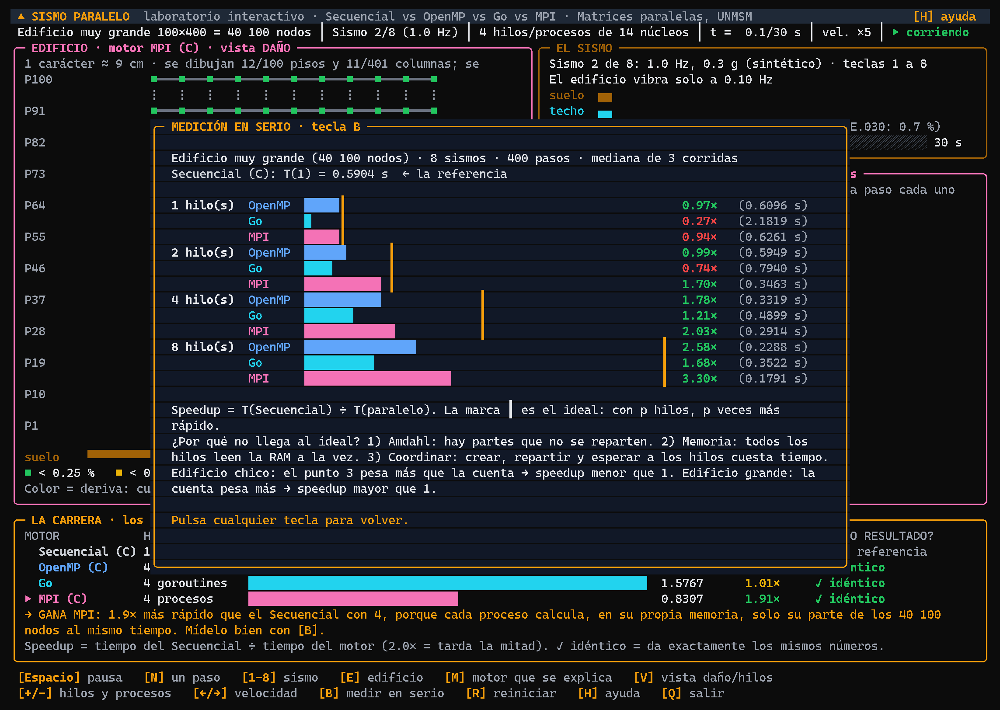
"Ahora cada motor corre solo, sin los demás, la misma simulación de 400 pasos, con 1, 2, 4 y 8 hilos o procesos, y nos quedamos con la mediana de tres corridas."
"El secuencial tarda 0,59 segundos. Miren las filas rosadas: MPI con 2 procesos ya es 1,7 veces más rápido, con 4 es 2 veces y con 8 procesos, 3,3 veces más rápido: 0,18 segundos. OpenMP llega a 2,6 y Go a 1,7.
La rayita naranja de cada fila es el ideal, p veces más rápido con p procesos. No se llega al ideal por lo que vimos: la comunicación, la memoria compartida y que esta laptop tiene pocos núcleos rápidos. Pero la diferencia es clara: el mismo sismo, en un tercio del tiempo y con el mismo resultado."
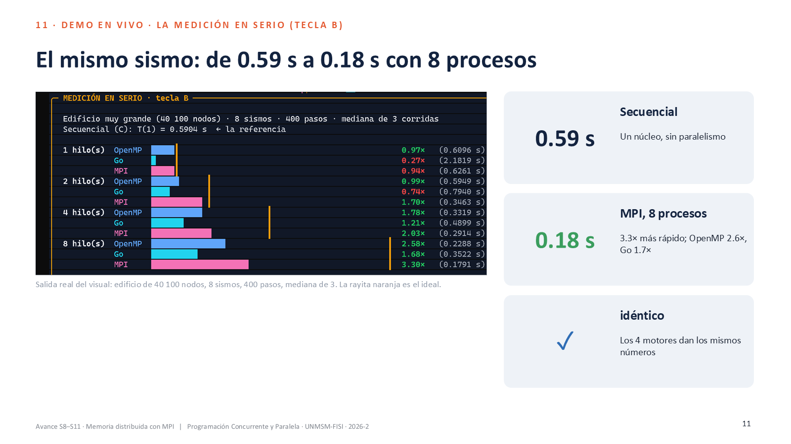
DEMO_MPI.bat, que corre por consola.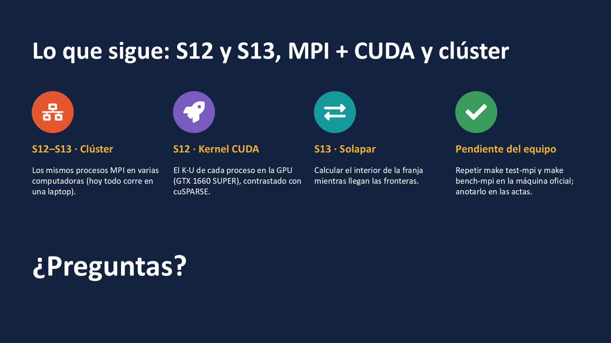
"Con esto cerramos la fase de memoria distribuida y cumplimos el Hito H3. En las semanas 12 y 13 vienen dos cosas. Primero, llevar los procesos MPI a un clúster de varias computadoras, porque hoy todo corre en una sola laptop. Y segundo, el híbrido: cada proceso MPI va a calcular su parte del producto en la tarjeta gráfica con CUDA, y vamos a calcular el interior de cada franja mientras llegan las fronteras, para esconder el tiempo de comunicación.
Un pendiente: estas mediciones las hicimos en mi laptop, así que las vamos a repetir en la máquina oficial del equipo para el informe final.
Muchas gracias. ¿Alguna pregunta?"
| Si te preguntan… | Respondes… |
|---|---|
| ¿Qué diferencia hay entre MPI y OpenMP? | "OpenMP son hilos dentro de un computador que comparten la memoria. MPI son procesos con memoria separada que se comunican con mensajes; por eso MPI puede usar varios computadores, como en un clúster." |
| ¿Qué es un nodo fantasma? | "Una copia de un nodo de otro proceso que necesito para calcular mi parte. En cada paso de tiempo se actualiza con el intercambio de fronteras." |
| ¿Por qué usaron MS-MPI y no OpenMPI? | "Porque es el MPI nativo de Windows y funciona con el mismo compilador que ya usábamos. Los dos siguen el mismo estándar MPI: el código es el mismo, y en Linux se compila con mpicc." |
| ¿Por qué Sendrecv_replace en Cannon? | "Porque manda y recibe en la misma llamada: todos rotan a la vez sin quedarse bloqueados y sin memoria extra." |
| ¿Por qué SUMMA si ya tenían Cannon? | "Porque SUMMA funciona con cualquier número de procesos, no necesita el sesgo inicial y es el que usan bibliotecas como ScaLAPACK." |
| ¿El resultado es aproximado? | "En el simulador no: es idéntico bit a bit, lo comprobamos comparando los archivos. En Cannon y SUMMA hay diferencias de 1e-15, por el orden de las sumas en punto flotante." |
| ¿Por qué no es 9 veces más rápido con 9 procesos? | "Porque esta laptop solo tiene 2 núcleos rápidos y 10 eficientes, todos comparten la memoria RAM, y además hay comunicación: entre el 28 y el 51 % del tiempo, según el tamaño del edificio." |
| ¿Entonces la programación paralela siempre es mejor? | "No siempre. Conviene cuando el problema es grande: en el edificio chico la comunicación se come la mitad del tiempo. Y no hay que pedir más procesos que núcleos, como vimos con 16." |
| ¿Qué es el balanceo por nnz? | "Repartir para que cada proceso tenga la misma cantidad de no nulos de la matriz, que es lo que realmente cuesta calcular, en vez de la misma cantidad de nodos." |
Informe_avance_S8_S11.pdf).Las capturas de la demo son cuadros reales del programa visual (sismo_visual.exe, el que abre VISUAL.bat), con los 4 motores calculando de verdad, MPI incluido. Se tomaron en la laptop DESKTOP-62M3KIP el 5 de noviembre de 2026. Los tiempos varían un poco en cada corrida.